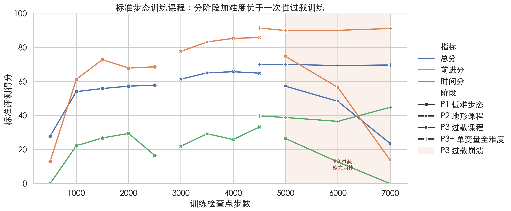
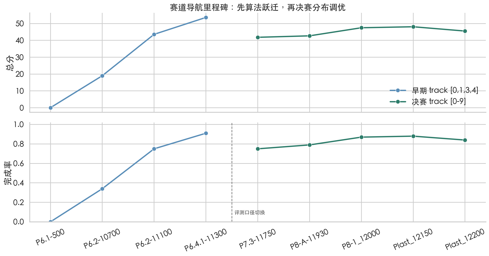
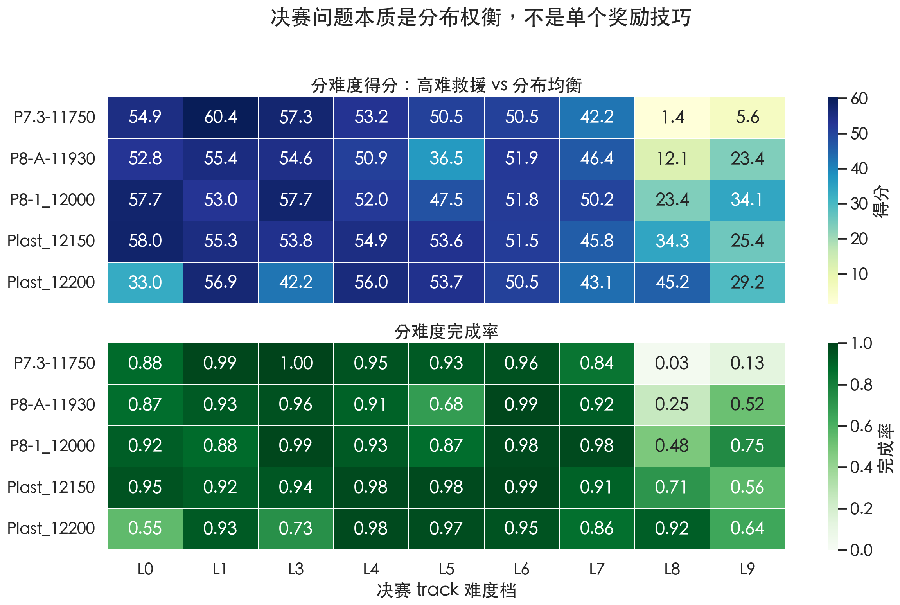
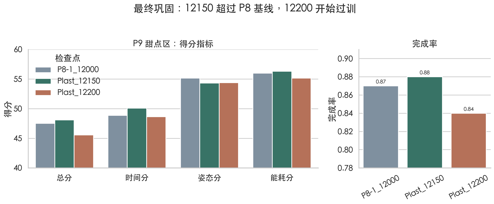

按命令走
输入主要是速度命令和地形扫描；目标是稳定执行 vx/vy/wz，不摔、少耗能、走得远。
我们把决赛任务拆成三层：可迁移步态、可控导航接口、决赛分布巩固。 每一层都由失败现象触发，并用 checkpoint sweep 与平台 eval 验证。
主句：不是单个 reward hack，而是按失败现象逐层拆问题。
standard 更像“按给定速度命令把身体控制好”；track 更像“在坡、台阶、墙和迷宫里自己决定下一步往哪走”。 所以我们不是把一个会走的 policy 直接搬过去，而是把问题重新拆成三问。
输入主要是速度命令和地形扫描；目标是稳定执行 vx/vy/wz，不摔、少耗能、走得远。
输入还必须包含目标和局部障碍；目标是边走边转、避墙、过台阶、走出 maze。
主句：标准赛考“身体控制”，决赛考“身体控制 + 路径选择 + 分布稳定”。

早期模型可以靠站稳、低动作拿姿态和能耗分，但 forward/time 不上去。 command 课程的作用，是先打破“不走”的局部最优，而不是一开始就追求全方向泛化。
| 阶段 | 训练 command 数值 | 评测信号 |
|---|---|---|
| E1 对照 | 无训练 command；评测时 action=0 | forward 8.32，time 0 |
| E3 | vx [0.5, 1.0]，vy 0，wz 0；resample [4, 6]s | forward 60.58，time 21.56 |
| E6-P1 | vx [0.3, 0.8]，vy [0, 0]，wz [0, 0]；resample [8, 12]s | P1-2500 总分 57.86，进入 P2 |
所以它不应该被解释成对某个地形的特化。我们先把底层步态从站立局部最优里拉出来，再进入 terrain curriculum。
command 让机器人开始走，terrain curriculum 让这套 gait 从平地迁移到坡、反坡、台阶、反台阶和 maze。 这一步的重点不是刷单个地形峰值，而是让可迁移能力变宽。
| P1 低难 | difficulty [0, 0.3]；max level 0；坡/反坡 0.8，台阶 0.2；关闭域随机化。 |
|---|---|
| P2 迁移 | difficulty [0, 0.6]；max level 3；坡/反坡 0.4，台阶/反台阶 0.6；开启摩擦随机化。 |
| 证据 | stairs_inv 从 forward/time 26.46/0 打开到 65.35/12.43。 |
P3 把 full difficulty、maze、push、reward penalty 等变量一起加，结果不是更强，而是崩。 这个失败反过来确定了后续实验纪律：每一阶段只改一个主要变量。
这也是为什么 track 阶段没有继续堆 reward，而是拆成 goal obs、导航接口、高难暴露、低 lr consolidation。
这页的讲法：我们不是一路长训，而是在每个分支用 eval 做筛选，只让最合适的 checkpoint 进入下一阶段。
P6.1 追加 goal obs 后能跑通，但正式 eval 几乎不完成。 这说明“把目标信息 append 到 obs”不足以让旧 locomotion policy 自动学会选路。

赛道终点很远，直接盯终点容易斜上台阶、撞墙或在迷宫里绕远。
每一小段先选择局部目标点：前方、左前或右前。
把局部目标转换成速度和转向 command。
写回旧 policy 熟悉的 command 槽，让 PPO 继续负责 gait。
路径选择属于高层结构约束，稀疏或错位 reward 很容易让训练曲线和平台分数脱钩。
导航方向由规则层给出，底层 policy 不需要重新发明走路，只要用已有 locomotion 能力执行 command。
P7 在 level0-7 已经可用，但决赛全口径暴露 level8/9 几乎不行。 后续核心不是继续调 reward，而是做 terrain distribution curriculum。

| checkpoint | 总分 | 完成率 | 判断 |
|---|---|---|---|
| P8-1_12000 | 47.51 | 0.87 | 强基线 |
| Plast_12150 | 48.10 | 0.88 | 当前选择 |
| Plast_12200 | 45.55 | 0.84 | 过训反例 |

command 课程打破不走，terrain curriculum 扩展地形能力。
goal obs + partial load 跑通迁移，waypoint command 槽解决选路接口。
P8 高难暴露打开 level8/9，P9 低 lr consolidation 选择均衡点。
训练 reward 曲线只用于诊断，最终选择以平台 eval、压力测、completion 和分 level trade-off 为准。